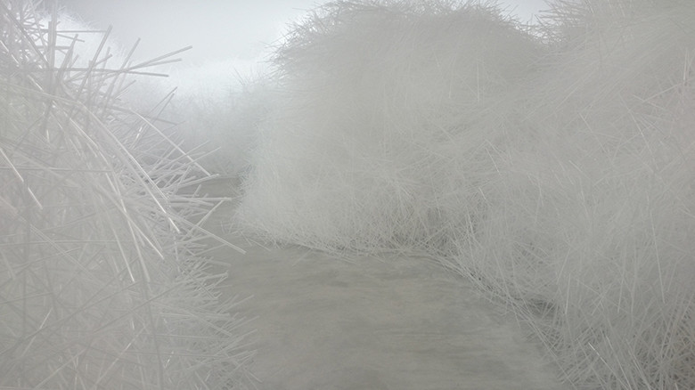

idea

吉岡徳仁
-どんな人
言わずと知れた有名デザイナー。デザイン以外のアート、建築の分野でも活躍しており、自然や光をテーマにした作品は世界で高く評価されています。
-解説
透明なストローが空間全体を覆い尽くすインスタレーション作品です。透明で軽いという特徴を持つストローを素材としてそれをひたすら積み重ねることによって、独特なやわらかい空気感を表現しています。
-好きなところ
ストロー自体が細長い「線」として用いることができるので、方向をある程度固定して積み重ねることで、空気の流れのようなものも作ることができます。ストローの「細長さ」、「軽さ」、「透明性」、この三つの特徴を余すところなく活用しているところに凄みを感じました。